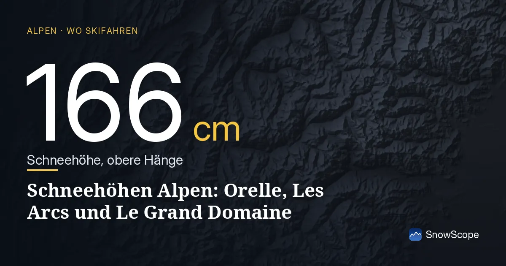

Schneehöhen Alpen: Orelle, Les Arcs und Le Grand Domaine
Schneehöhen Alpen – Schnee am Boden, Schnee der letzten 72 Stunden, Schnee, der noch kommt: Zusammen zeigen sie auf Orelle, Les Arcs und Le Grand Domaine. Die dickste Schneedecke dieser Gruppe hat Les Arcs, etwa 166 cm in den oberen Hängen; danach kommen Orelle 145 cm und La Grave 133 cm. Jede Zahl hier ist eine Schätzung mit etwas Unsicherheit; der Trend über mehrere Tage ist meist verlässlicher als ein einzelner Wert.
Die Live-Schneeprognose für Orelle in der SnowScope-AppSchneehöhen, Pulverschnee-Alarme und 3D-Karte, gratis.
Die nächsten Tage in der Prognose
Bis zum 23. November kommen laut Prognose 92 cm in Orelle, 77 cm in Les Arcs und 107 cm in Le Grand Domaine dazu; Mengen für mehrere Tage im Voraus können sich noch ändern.
Prognosen für einige Tage können sich ändern: Schau am Tag vor der Abfahrt noch einmal auf die Karte.
| Skigebiet | Schneehöhe | Neuschnee, 72 h | Erwartet, nächste Tage | Gipfel |
|---|---|---|---|---|
| Orelle | 145 cm | 143 cm | 92 cm | 3.221 m |
| Les Arcs | 166 cm | 134 cm | 77 cm | 3.205 m |
| Le Grand Domaine | 125 cm | 129 cm | 107 cm | 2.516 m |
| La Grave | 133 cm | 122 cm | 108 cm | 3.543 m |

Höhe und Schneefallgrenze
Mit der Nullgradgrenze bei 2.500 m bis 2.780 m am 22. November können die unteren Hänge in Orelle nassen Schnee oder Schmelze bekommen, oben bleibt es winterlich.
Schatten schützt die Schneedecke. Hohe Nordhänge bekommen weniger Sonne, deshalb hält ihr Schnee länger als auf der Südseite.

Sicherheit und Lawinengefahr
Lies vor dem Freeriden oder einer Skitour den offiziellen Lawinenlagebericht (Links unten).
Der beste Schnee für die Reise
In den letzten 72 Stunden fielen 143 cm Neuschnee auf Orelle; 55 cm davon kamen in den letzten 24 Stunden. Unser Modell teilt Orelle in drei Höhen: 104 cm am Gipfel (3.221 m), 61 cm an der Mittelstation (2.779 m), 36 cm im Tal (2.338 m). Die letzte klare Satellitenansicht von Orelle, am 14. November, zeigt die Hänge mit Schnee bedeckt.
Les Arcs gewann in den letzten 72 Stunden 134 cm Neuschnee, 53 cm davon in den letzten 24 Stunden, die Schneedecke dort wächst also. In Les Arcs ändert die Höhe alles: Unser Modell zeigt 4 cm im Tal (1.222 m), 38 cm an der Mittelstation (2.213 m) und 74 cm am Gipfel (3.205 m). Am 18. November, dem letzten klaren Tag, sahen Satelliten Schnee über Les Arcs.
In den letzten 72 Stunden fielen 129 cm Neuschnee auf Le Grand Domaine; 49 cm davon kamen in den letzten 24 Stunden. Unser Modell teilt Le Grand Domaine in drei Höhen: 48 cm am Gipfel (2.516 m), 31 cm an der Mittelstation (1.867 m), 8 cm im Tal (1.219 m). Die letzte klare Satellitenansicht von Le Grand Domaine, am 14. November, zeigt die Hänge mit Schnee bedeckt.
Tipps für Skifahrer
- Schnee auf der Karte heißt nicht, dass das Skigebiet offen ist: Prüfe Lifte und Öffnungstermine auf der Website des Skigebiets.
- Schneefall verteilt sich über das ganze Gebirge, deshalb haben kleine Skigebiete nahe den Spitzenreitern oft ähnlich viel Schnee bei weniger Andrang. Die Karte zeigt es.
- Früher Schnee ist dünn. Bleib auf offenen, präparierten Pisten: Steine und Gras liegen oft knapp darunter.
- Eine Faustregel, die selten falsch liegt: hoch und nordseitig hält Schnee, südseitig verliert ihn zuerst.
- Stell in der SnowScope-App einen Pulverschnee-Alarm ein, damit du weißt, wann Orelle Neuschnee bekommt.
Zu diesen Zahlen
Die Schneehöhen der Skigebiete sind der meiste Schnee in den oberen Hängen laut SnowScope-Schneemodell (etwa 1 km, Lauf vom 20. November); es sind Schätzungen für eine Fläche, keine Messung an einem Punkt. Werte von Messstationen sind Messungen am angegebenen Tag. Prognosen können sich ändern. Lies vor dem Freeriden immer den offiziellen Lawinenlagebericht.
Offizielle Lawinenlageberichte: EAWS (Alps)
Diesen Bericht zitieren
Für Forschung, Lehre oder Presse: Zahlen und Grafiken sind unter CC BY 4.0 mit dieser Quellenangabe frei nutzbar.
SnowScope (2026), Schneehöhen Alpen: Orelle, Les Arcs und Le Grand Domaine, https://snowscope.app/blog/de/2026/11/alps-where-to-ski-this-weekend-20-november-2026.html, abgerufen am 2026-11-20
SnowScope (Atlas Labs). (2026, November 20). Schneehöhen Alpen: Orelle, Les Arcs und Le Grand Domaine. SnowScope snow reports. https://snowscope.app/blog/de/2026/11/alps-where-to-ski-this-weekend-20-november-2026.html
BibTeX
@misc{snowscope2026alpswheretoskithisweeken,
author = {{SnowScope (Atlas Labs)}},
title = {Schneehöhen Alpen: Orelle, Les Arcs und Le Grand Domaine},
year = {2026},
month = nov,
howpublished = {\url{https://snowscope.app/blog/de/2026/11/alps-where-to-ski-this-weekend-20-november-2026.html}},
note = {Published 2026-11-21 10:57 UTC; accessed 2026-11-20}
}· CC BY 4.0 · Methoden, Daten und Werkzeuge →
Orelle: Schnee und Temperatur nach Höhe, dieser Winter vs letzter (Werkzeuge) →
Orelle folgen
Gratis: eine Nachricht, wenn Neuschnee kommt, und jeden Morgen die Vorhersage.